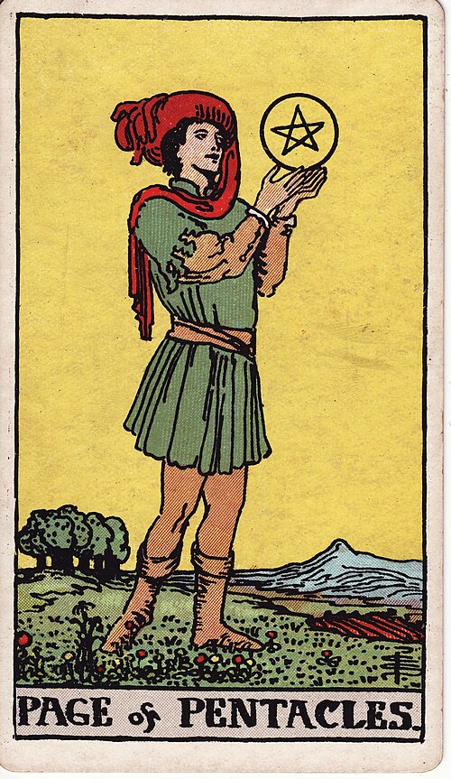

| Arcana | Minor |
| Suit | Pentacles |
| Element | Earth |
| Attribution | Earth of Earth |
Page of Pentacles
Page of Pentacles
In shortSign up and start learning properly.
Upright
studiousnessa practical startnew skillambitiona tangible offer
A studious, practical beginning — starting the course, taking the entry-level job, learning something from the ground up. Patient and unhurried, and it means it. As a message, it brings a concrete offer worth taking seriously.
Reversed
procrastinationunrealistic plansstudy avoidedan offer not pursued
The practical start stalls. Procrastination, plans that ignore the actual numbers, study abandoned, or an offer left unanswered until it expires. The ambition is real; the groundwork is missing.
In the pictureHe stands in a ploughed green field holding a pentacle up in both hands, studying it with total absorption. He is not moving. Trees and mountains distant — the whole landscape is cultivated, worked land.
The turn
Enrol. Sign up for the actual thing rather than reading about it.
Reading with your own deck?
Sage records the cards you actually pull, writes the reading, keeps every one, and shows you what keeps returning across them. Free, private, no account.